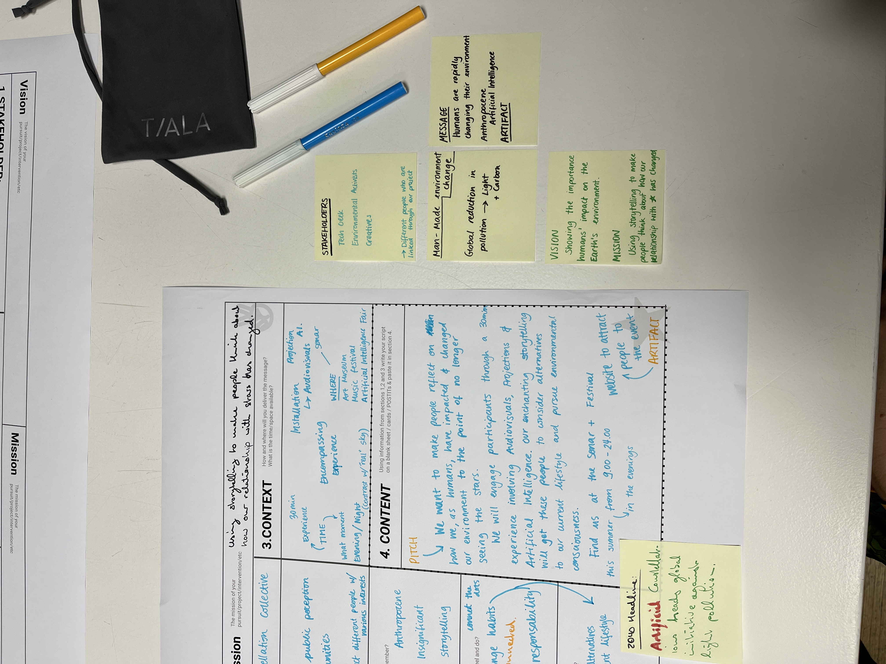
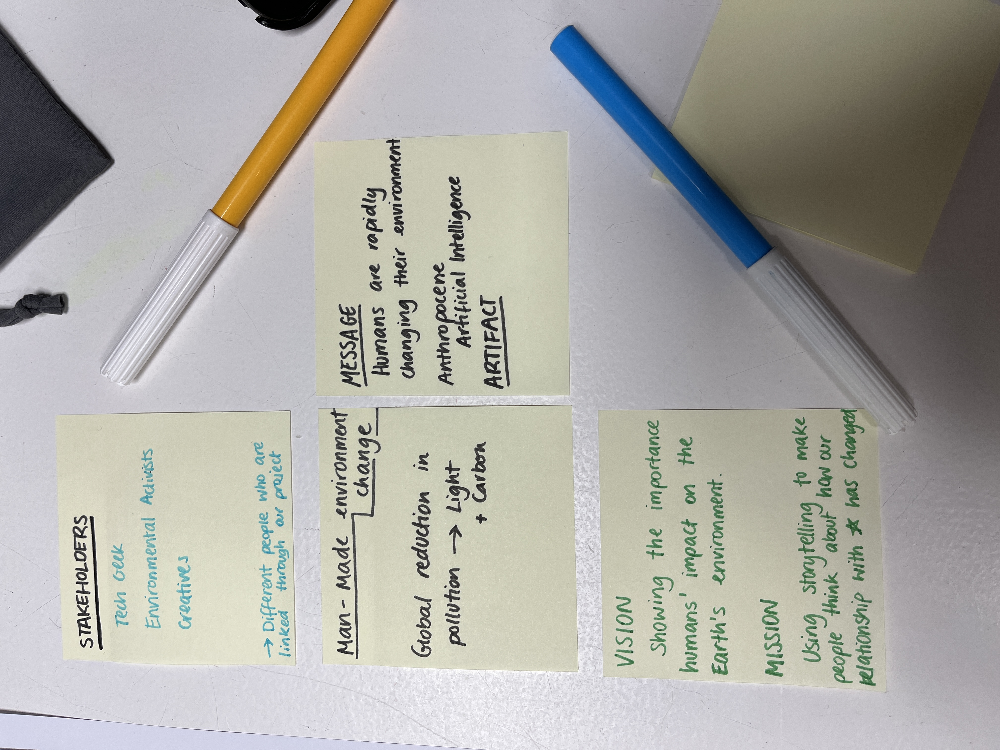
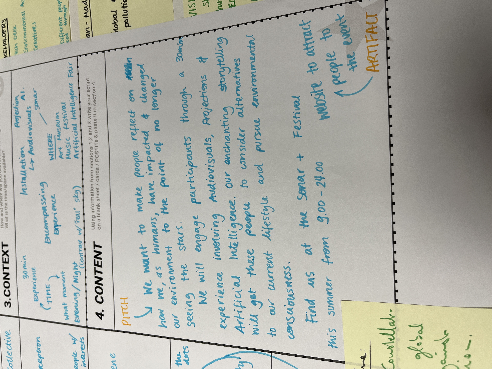

Weekly reflections
Documenting my Master's program, week by week
WEEK 3
Finally in-person classes
We started the week with Making sense and meaning, where we discussed the content of some books, articles and papers we had to read. It was interesting to hear everybody’s take on the various topics. We mostly referenced a book titled “The history of the world in 7 cheap things” because it was such an impactful read. I took notes throughout the debate, and I will watch the recordings back when writing my final paper for the class.
After Tomas’ online Making sense and meaning debate, we had to go to IAAC for Kate’s Branding class. I was happy when she showed my work to the class as an example because I truly enjoyed working on the branding activity. We proceeded to work on other exercises involving our projects, target audiences and communication. I teamed up with Chris for the activity, and this is what we worked on:



On Tuesday, we started the Fabacademy challenge. I teamed up with Roberto and Marina for the challenge. You can find our full documentation here.
The Fabacademy Challenge took up most of our week, and we were at IAAC from 10 until 18 almost every day getting our project done. On Friday we presented the results. I particularly enjoyed George and Kai’s project where they created stamps out of biomaterials and recycled plastics. I admired how well it suited their “brand”. I could tell that this project was in alignment with the rest of the work they’ve done and I wish I could do the same for my future projects. Even though I liked my output, it felt more like a fun side project rather than an addition to my Design Intervention plans.
I have found it hard to include my Design intervention ideas in my fabacademy weekly + monthly challenges. So far, we’ve focused mainly on laser cutting small objects, which although I’ve had fun working with, it’s kind of irrelevant to my ideas around interactive installations and multimedia projections.
What I have also noticed is that even though I am not fully making the connection between Fabacademy and my Design Interventions (yet), I am definitely there with the branding course. People have struggled defining their brand, visual identity, messaging and mission, but I have very clear ideas. Maybe this is related to my background, which so far has involved more branding and graphic design as opposed to fabrication and woodwork.
From now on I will try to focus my future assignments and projects around my Design Intervention. I want my projects to be more cohesive and complementary, because as of now, they seem all over the place. I want to be able to add projects to my Miro board, like a string of events and various iterations within the same space.
I will try to work more closely with ideas in alignment with my bigger goal and use the weekly assignments we have as supporting frameworks for my broad vision.